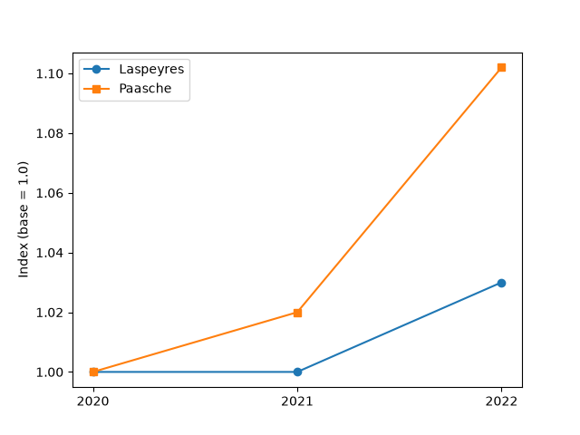
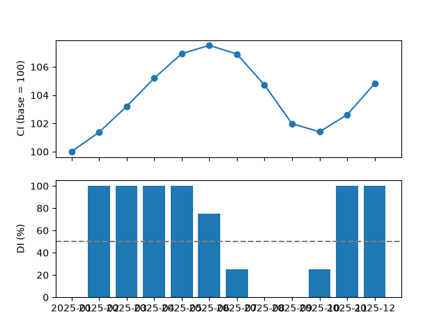

第 3 章: 物価指数と景気・雇用の指標¶
3.1 この章の地図¶
第 1・2 章では、GDP の大きさを測りました。この章では、GDP を、物価の変化と、数量の変化に分けます。物価の変化を測るのが、物価指数です。同じ「物価」でも、数量を、基準の時点のものにするか（ラスパイレス）、比べる時点のものにするか（パーシェ）で、値が変わります。
あわせて、景気の方向と大きさを測る景気動向指数（DI・CI）と、雇用の指標（有効求人倍率・完全失業率）を、計算します。月ごとの、表のデータを扱うので、ここで、pandasを、初めて使います。

| 項目 | 内容 |
|---|---|
| 経済学の題材 | 名目・実質 GDP、GDP デフレータ（パーシェ）、CPI・CGPI（ラスパイレス）、景気動向指数（DI・CI）、有効求人倍率、完全失業率 |
| 使う Python の機能 | 関数、リスト、テスト（pytest）、pandas（DataFrame・Series・列の計算・diff・pct_change・CSV の読み込み） |
| 新しく導入するライブラリ | pandas（この章で、必要な分だけ） |
| 完成形 | laspeyres、paasche、real_gdp、gdp_deflator、price_indexes、diffusion_index、composite_index、job_openings_ratio、unemployment_rate、load_indicators |
| ファイル | 実装: lib/chapter03/price_index.py、lib/chapter03/indicators.py、lib/chapter03/plot.py（図）／テスト: test/chapter03/test_price_index.py、test/chapter03/test_indicators.py、test/chapter03/test_plot.py（自分で書くときは、practice/chapter03/ に、同じ名前で作ります） |
| 前提 | この記事の第 1 章・第 2 章と、第 1 シリーズの第 1〜7 章。第 1 シリーズの第 11 章（pandas）・第 12 章（実質 GDP）と題材が重なりますが、この記事は、独立して読めます |
| データ | 手計算できる小さな例と、架空の月次指標 data/ch03_indicators.csv（実在の統計ではありません。data/README.md に、作り方があります） |
経済学の式とコードの対応¶
| 経済学 | 式 | コード |
|---|---|---|
| ラスパイレス指数 | Σ(比較時の価格 × 基準時の数量) ÷ Σ(基準時の価格 × 基準時の数量) | laspeyres(base_prices, base_quantities, current_prices) |
| パーシェ指数 | Σ(比較時の価格 × 比較時の数量) ÷ Σ(基準時の価格 × 比較時の数量) | paasche(base_prices, current_prices, current_quantities) |
| 実質 GDP | 名目 GDP ÷ GDP デフレータ × 100 | real_gdp(nominal, deflator) |
| GDP デフレータ | 名目 GDP ÷ 実質 GDP × 100 | gdp_deflator(nominal, real) |
| DI | 上昇した系列の割合（％）。50％超で上向き | diffusion_index(indicators) |
| CI | 系列の変化率の平均を積み上げる。基準 = 100 | composite_index(indicators, base) |
| 有効求人倍率 | 有効求人数 ÷ 有効求職者数 | job_openings_ratio(openings, applicants) |
| 完全失業率 | 完全失業者 ÷ 労働力人口 × 100 | unemployment_rate(employed, unemployed) |
3.2 準備¶
サンプルコードは、リポジトリの apps/macro-basics-programming/python/ にあります。環境の準備は、第 1 章の 1.2 節と同じです。pandas は、uv sync で、すでに入っています。
cd apps/macro-basics-programming/python
uv sync
uv run pytest test/chapter03
36 passed
自分でコードを書くときは、practice/chapter03/ を作って、完成形と同じ名前（price_index.py・test_price_index.py など）のファイルに書きます。CSV は、data/ch03_indicators.csv を、そのまま使います。完成形（lib/ と test/）は、答え合わせ用です。 自分で書き終えてから、開いてください。
3.3 予想する¶
次の問いに、コードを見る前に、予想してください（紙に書いてもかまいません）。
物価指数
- 2 つの財の、基準時の価格が [100, 200]、数量が [10, 5] でした。比較時には、価格が [110, 180]、数量が [12, 4] になりました。ラスパイレス指数（基準時の数量を使う）と、パーシェ指数（比較時の数量を使う）は、それぞれ、いくつですか。どちらが大きいですか
- 比較時の名目 GDP（価格 × 数量の合計）が 2040、基準時の価格で測った実質 GDP が 2000 のとき、GDP デフレータは、いくつですか。デフレータが 102 のとき、名目 GDP 2040 を、実質 GDPに直すと、いくつですか
景気と雇用
- 3 つの系列の、4 か月の値は、次のとおりです。月ごとの DIは、いくつですか。DI が 50％を超えて、景気が上向きなのは、どの月ですか
| 月 | 系列 a | 系列 b | 系列 c |
|---|---|---|---|
| m0 | 100 | 50 | 200 |
| m1 | 110 | 50 | 190 |
| m2 | 105 | 55 | 195 |
| m3 | 120 | 60 | 210 |
- 就業者が 6500、完全失業者が 200 のとき、完全失業率は、いくつですか。有効求人数が 1500、有効求職者数が 1000 のとき、有効求人倍率は、いくつですか
3.4 物価指数と景気・雇用の指標の考え方¶
名目と実質¶
名目 GDP は、その年の価格で測った GDP です。物価が上がると、数量が変わらなくても、増えます。実質 GDP は、基準の年の価格で測った GDP で、数量の変化だけを表します。
名目 GDP = 実質 GDP × GDP デフレータ ÷ 100
デフレータは、基準年を 100 とする指数です。1.02 倍ではなく、102 と書くので、÷ 100 が、必要です。
ラスパイレスとパーシェ¶
物価指数は、固定した買い物かごの値段が、基準時から、どれだけ変わったかを測ります。かごの中身（数量）を、どの時点のものにするかで、2 種類あります。
| 指数 | 数量 | 使われる指標 |
|---|---|---|
| ラスパイレス | 基準時の数量 | CPI（消費者物価指数。家計の消費）、CGPI（企業物価指数。企業間取引） |
| パーシェ | 比較時の数量 | GDP デフレータ |
GDP デフレータが、パーシェ型なのは、名目 GDP ÷ 実質 GDP だからです。名目 GDP は、比較時の価格 × 比較時の数量、実質 GDP は、基準時の価格 × 比較時の数量です。
景気動向指数¶
景気動向指数は、景気に関係する、いくつもの系列を、まとめた指標です。系列は、景気に先行するもの（新規求人数・株価）、一致するもの（生産指数・有効求人倍率・商業販売額）、遅れるもの（完全失業率・家計消費支出・法人税収入）に、分けます。
- DI（ディフュージョン・インデックス）は、景気の方向を表します。前の月より上昇した系列の割合です。一致 DI が 50％を超えると、景気は上向きです
- CI（コンポジット・インデックス）は、景気の大きさ（勢い）を表します。系列の変化率の平均を、積み上げた指数で、基準年を 100 とします
雇用の指標¶
有効求人倍率 = 有効求人数 ÷ 有効求職者数
1 を超えると、求職者 1 人あたりの求人が、1 件より多い、という意味です。
完全失業率 = 完全失業者 ÷ 労働力人口、労働力人口 = 就業者 + 完全失業者
分母は、就業者を含む、労働力人口です。完全失業者を、就業者で割るのではありません。
3.5 プログラミング¶
pandas を、なぜ使うのか¶
物価の表（期間 × 品目）や、景気の指標の表（月 × 系列）は、行と列に、名前の付いた表です。リストの、リストで書くと、「何行目の、何列目」を、番号で覚えることになります。pandasは、表を、行と列の名前で扱えます。この章では、次だけを、使います。
pd.DataFrame({...}, index=[...]): 表を作る。pd.Series: 表の 1 列（名前の付いた 1 次元の値）df["列"]、df.loc["行"]: 列、行を、名前で選ぶdf * other、df.sum(axis=1): 列の名前をそろえて、計算する。行ごとの合計df.diff()、df.pct_change(): 前の行との差、変化率pd.read_csv(...): CSV を読む
実際に、動かします。
import pandas as pd
prices = pd.DataFrame(
{"bread": [100, 110], "milk": [200, 180]}, index=["2020", "2021"]
)
quantities = pd.DataFrame({"bread": [10, 12], "milk": [5, 4]}, index=["2020", "2021"])
print(prices)
print(prices.loc["2021"].tolist())
print((prices * quantities).sum(axis=1).tolist())
print(prices.pct_change().round(3))
bread milk
2020 100 200
2021 110 180
[110, 180]
[2000, 2040]
bread milk
2020 NaN NaN
2021 0.1 -0.1
prices["bread"]は、パンの列、prices.loc["2021"]は、2021 年の行です（上は、行を選んだ値）prices * quantitiesは、同じ行・同じ列どうしを、かけます。.sum(axis=1)で、行ごと（年ごと）に足して、支出の合計（2000、2040）ですpct_change()の、最初の行は、前の行がないので、NaN（欠けた値）です。0.1 は、パンが 10％ 上がったこと、−0.1 は、牛乳が 10％ 下がったことを、表します（diff()は、差を返します。DI で使います）
Red: ラスパイレスとパーシェ¶
予想の最初の問いの値を、テストにします。
import pytest
from lib.chapter03.price_index import laspeyres, paasche
BASE_PRICES = [100, 200]
BASE_QUANTITIES = [10, 5]
PRICES = [110, 180]
QUANTITIES = [12, 4]
def test_ラスパイレスは基準時の数量で比較時の価格を評価する() -> None:
# (110 × 10 + 180 × 5) ÷ (100 × 10 + 200 × 5) = 2000 ÷ 2000
assert laspeyres(BASE_PRICES, BASE_QUANTITIES, PRICES) == pytest.approx(1.0)
def test_パーシェは比較時の数量で価格の変化を評価する() -> None:
# (110 × 12 + 180 × 4) ÷ (100 × 12 + 200 × 4) = 2040 ÷ 2000
assert paasche(BASE_PRICES, PRICES, QUANTITIES) == pytest.approx(1.02)
laspeyres と paasche が、まだないので、テストは失敗します（Red）。
Green: 物価指数を実装する¶
分子と分母は、どちらも、「価格 × 数量の合計」です。まず、その合計を、補助関数 _spending にします（割り算は、分母が 0 なら、エラーにする _ratio に、まとめています）。
def _spending(prices: Sequence[float], quantities: Sequence[float]) -> float:
"""支出額 = 価格 × 数量 の合計。品目の数が違えばエラー。"""
if len(prices) != len(quantities):
raise ValueError("価格と数量は、同じ長さ（品目の数）にする")
return sum(p * q for p, q in zip(prices, quantities, strict=True))
def laspeyres(
base_prices: Sequence[float],
base_quantities: Sequence[float],
current_prices: Sequence[float],
) -> float:
"""ラスパイレス指数 = Σ(比較時の価格 × 基準時の数量) ÷ Σ(基準時の支出)。
数量は、基準時のものを使う。
"""
return _ratio(
_spending(current_prices, base_quantities),
_spending(base_prices, base_quantities),
)
def paasche(
base_prices: Sequence[float],
current_prices: Sequence[float],
current_quantities: Sequence[float],
) -> float:
"""パーシェ指数 = Σ(比較時の価格 × 比較時の数量) ÷ Σ(基準時の価格 × 比較時の数量)。
数量は、比較時のものを使う。
"""
return _ratio(
_spending(current_prices, current_quantities),
_spending(base_prices, current_quantities),
)
import と補助関数（写すときに足す）
記事の抜粋には、import と、先頭が _ の補助関数・定数を、省いています。完成形のファイルの先頭にある、次の部分を、写してください。
lib/chapter03/indicators.py
from pathlib import Path
import pandas as pd
lib/chapter03/price_index.py
from collections.abc import Sequence
import pandas as pd
def _spending(prices: Sequence[float], quantities: Sequence[float]) -> float:
"""支出額 = 価格 × 数量 の合計。品目の数が違えばエラー。"""
if len(prices) != len(quantities):
raise ValueError("価格と数量は、同じ長さ（品目の数）にする")
return sum(p * q for p, q in zip(prices, quantities, strict=True))
def _ratio(numerator: float, denominator: float) -> float:
if denominator == 0:
raise ValueError("基準時の支出が 0 で、指数を計算できない")
return numerator / denominator
ラスパイレスは、数量を、基準時のものだけ受け取ります。比較時の数量は、引数にありません。比較時の数量が、どう変わっても、ラスパイレスは、変わりません。品目の数が違うとき（_spending）と、基準時の支出が 0 のとき（_ratio）は、エラーです（どちらもテストがあります）。
数量が、基準時から変わらなければ、2 つの指数は、一致します（test_数量が変わらなければラスパイレスとパーシェは一致する）。
名目 GDP・実質 GDP・GDP デフレータ¶
GDP デフレータは、名目 GDP ÷ 実質 GDP × 100 です。基準時の価格で測った実質 GDPを使うと、パーシェ指数の 100 倍に、一致します。これを、テストにします。
def test_GDPデフレータは基準時価格で測った実質GDPで名目GDPを割る() -> None:
nominal = sum(p * q for p, q in zip(PRICES, QUANTITIES, strict=True))
real = sum(p * q for p, q in zip(BASE_PRICES, QUANTITIES, strict=True))
assert (nominal, real) == (2040, 2000)
assert gdp_deflator(nominal, real) == pytest.approx(
100 * paasche(BASE_PRICES, PRICES, QUANTITIES)
)
def gdp_deflator(nominal: float, real: float) -> float:
"""GDP デフレータ = 名目 GDP ÷ 実質 GDP × 100。"""
if real == 0:
raise ValueError("実質 GDP が 0 で、デフレータを計算できない")
return nominal / real * 100
逆に、実質 GDP を求める real_gdp は、名目 GDP ÷ デフレータ × 100 です。デフレータが 0 以下、実質 GDP が 0 のときは、エラーです。
表で計算する: pandas¶
品目や期間が増えると、リストを、1 つずつ渡すのは、面倒です。期間 × 品目の表（上）を、そのまま渡して、各期のラスパイレスとパーシェを、一度に求める関数 price_indexes を、作ります。テストは、表の列が laspeyres・paasche で、値が、リストで 1 つずつ計算した値に一致することを、確かめます。
PRICE_TABLE = pd.DataFrame(
{"bread": [100, 110, 121], "milk": [200, 180, 170]},
index=["2020", "2021", "2022"],
)
QUANTITY_TABLE = pd.DataFrame(
{"bread": [10, 12, 14], "milk": [5, 4, 3]},
index=["2020", "2021", "2022"],
)
def price_indexes(
prices: pd.DataFrame, quantities: pd.DataFrame, base: str
) -> pd.DataFrame:
"""各期のラスパイレス指数とパーシェ指数の表（行は期間、列は laspeyres・paasche）。
prices・quantities は、行が期間、列が品目の表。base は、基準時の期間の名前。
"""
if not (
prices.index.equals(quantities.index)
and prices.columns.equals(quantities.columns)
):
raise ValueError("価格と数量の表は、期間と品目をそろえる")
if base not in prices.index:
raise ValueError(f"基準時 {base} が、表の期間にない")
base_prices, base_quantities = prices.loc[base], quantities.loc[base]
# 基準時の価格で測った、各期の支出。基準時の値が、基準時の支出
paasche_base = (quantities * base_prices).sum(axis=1)
if (paasche_base == 0).any():
raise ValueError("基準時の支出が 0 の期間があり、指数を計算できない")
base_spending = paasche_base[base]
return pd.DataFrame(
{
"laspeyres": (prices * base_quantities).sum(axis=1) / base_spending,
"paasche": (prices * quantities).sum(axis=1) / paasche_base,
}
)
prices * base_quantities は、表（期間 × 品目）の各行に、基準時の数量（品目ごとの値）を、品目の名前をそろえてかけます。表の形が違うときと、基準時が表にないときは、エラーにします。
表は、2020 年が（1.0、1.0）、2021 年が（1.0、1.02）、2022 年が（1.03、1.102）です。この例では、パンが値上がりしたのに、パンの数量が増えるように、数量を作ったので、パーシェが、ラスパイレスより大きくなりました。値上がりした財を減らすふつうの買い方なら、逆に、パーシェのほうが小さくなります（練習問題の「多様」）。
景気動向指数: DI と CI¶
DI は、「前の月より上昇した系列の割合」です。diff() で、前の月との差を作り、正の数を数えます。変わらない系列は、半分と数えます。
SERIES = pd.DataFrame(
{
"a": [100, 110, 105, 120],
"b": [50, 50, 55, 60],
"c": [200, 190, 195, 210],
},
index=["m0", "m1", "m2", "m3"],
)
def test_DIは上昇した系列の割合で変わらない系列は半分と数える() -> None:
di = diffusion_index(SERIES)
assert math.isnan(di["m0"])
# m1: a が上昇（1）、b が変わらない（0.5）、c が低下（0）→ 1.5 ÷ 3
assert di["m1"] == pytest.approx(50)
assert di["m2"] == pytest.approx(200 / 3)
assert di["m3"] == pytest.approx(100)
def diffusion_index(indicators: pd.DataFrame) -> pd.Series:
"""DI（％）。前の月より上昇した系列の割合。変わらない系列は半分と数える。
行は月、列は系列。最初の月と、欠損のある月は、計算できないので NaN。
50％を超えると、景気は上向き。
"""
change = indicators.diff()
score = (change > 0).sum(axis=1) + 0.5 * (change == 0).sum(axis=1)
di = score / indicators.shape[1] * 100
known: pd.Series = di.where(change.notna().all(axis=1))
return known
最初の月は、前の月がないので、DI を計算できず、NaN です（.where(...) で、NaN にします）。CI は、各系列の変化率の平均を、積み上げて、基準の月を 100 に、そろえます。たとえば、2 つの系列 [100, 110, 121] と [200, 200, 220] なら、変化率の平均は、5％ と 10％ なので、CI は [100, 105, 115.5] です（このテストも、あります）。
def composite_index(indicators: pd.DataFrame, base: str) -> pd.Series:
"""CI。各系列の前の月からの変化率の平均を、積み上げた指数。base の月が 100。"""
if base not in indicators.index:
raise ValueError(f"基準の月 {base} が、表にない")
change = indicators.pct_change().mean(axis=1).fillna(0)
index = (1 + change).cumprod() * 100
rebased: pd.Series = index / index[base] * 100
return rebased
雇用の指標¶
有効求人倍率（1500 ÷ 1000 = 1.5）と完全失業率は、割り算です。分母が 0（求職者数が 0 以下、労働力人口が 0）のときは、エラーにします。
def test_完全失業率は完全失業者を労働力人口で割った値() -> None:
# 労働力人口 = 6500 + 200 = 6700、200 ÷ 6700 × 100
assert unemployment_rate(employed=6500, unemployed=200) == pytest.approx(2.9850746)
def unemployment_rate(employed: float, unemployed: float) -> float:
"""完全失業率（％）= 完全失業者 ÷ 労働力人口 × 100。
労働力人口 = 就業者 + 完全失業者。
"""
if employed < 0 or unemployed < 0:
raise ValueError("就業者数と完全失業者数は、負にならない")
labor_force = employed + unemployed
if labor_force == 0:
raise ValueError("労働力人口が 0 で、完全失業率を計算できない")
return unemployed / labor_force * 100
job_openings_ratio も、同じ形です（求人数が負、求職者数が 0 以下ならエラー）。
データを読み込む: CSV¶
月次の指標は、CSV に置きます（架空のデータ。data/README.md）。1 列目の month を、行の名前にして、読み込みます。欠損が、あれば、エラーにします。
def load_indicators(path: Path | str) -> pd.DataFrame:
"""CSV の指標を読み込む。1 列目（month）を行の名前にする。欠損があればエラー。"""
table = pd.read_csv(path, index_col="month", dtype={"month": str})
if table.isna().any().any():
raise ValueError("指標の CSV に、欠損がある")
return table
from pathlib import Path
from lib.chapter03.indicators import (
composite_index,
diffusion_index,
load_indicators,
)
table = load_indicators(Path("data/ch03_indicators.csv"))
print(table.shape)
print(list(table.columns))
print(table.loc["2025-01"].tolist())
di = diffusion_index(table)
ci = composite_index(table, base="2025-01")
print(di.round(1).tolist())
print(ci.round(2).tolist())
print("上向きの月:", list(di[di > 50].index))
(12, 4)
['production', 'retail_sales', 'job_openings_ratio', 'income']
[100.0, 200.0, 1.2, 300.0]
[nan, 100.0, 100.0, 100.0, 100.0, 75.0, 25.0, 0.0, 0.0, 25.0, 100.0, 100.0]
[100.0, 101.38, 103.21, 105.2, 106.94, 107.52, 106.92, 104.73, 101.99, 101.41, 102.61, 104.82]
上向きの月: ['2025-02', '2025-03', '2025-04', '2025-05', '2025-06', '2025-11', '2025-12']
DI は、2〜5 月に 100（4 系列すべてが上昇）、6 月に 75、7 月に 25、8・9 月に 0 と下がり、11・12 月に、100 に戻ります。50％を超えるのは、2〜6 月と、11・12 月です。CI は、6 月に、いちばん高く（107.52）、そのあと、9 月にかけて、下がります。DI が 50％を割った 7 月に、CI は、まだ、106.92 と、高い水準です。方向（DI）と、大きさ（CI）が、別のことを表している、ということです。
予想の答え合わせ¶
予想した答えを、プログラムで確かめます。
import pandas as pd
from lib.chapter03.indicators import (
diffusion_index,
job_openings_ratio,
unemployment_rate,
)
from lib.chapter03.price_index import gdp_deflator, laspeyres, paasche, real_gdp
print("ラスパイレス:", laspeyres([100, 200], [10, 5], [110, 180]))
print("パーシェ:", paasche([100, 200], [110, 180], [12, 4]))
print("GDP デフレータ:", gdp_deflator(2040, 2000))
print("実質 GDP:", real_gdp(2040, 102))
series = pd.DataFrame(
{"a": [100, 110, 105, 120], "b": [50, 50, 55, 60], "c": [200, 190, 195, 210]},
index=["m0", "m1", "m2", "m3"],
)
di = diffusion_index(series)
print("DI:", di.dropna().round(1).tolist())
print("上向きの月:", list(di[di > 50].index))
print("完全失業率:", round(unemployment_rate(6500, 200), 3))
print("有効求人倍率:", job_openings_ratio(1500, 1000))
ラスパイレス: 1.0
パーシェ: 1.02
GDP デフレータ: 102.0
実質 GDP: 2000.0
DI: [50.0, 66.7, 100.0]
上向きの月: ['m2', 'm3']
完全失業率: 2.985
有効求人倍率: 1.5
- 1 つ目の問い: ラスパイレスは (110 × 10 + 180 × 5) ÷ (100 × 10 + 200 × 5) = 2000 ÷ 2000 = 1.0、パーシェは (110 × 12 + 180 × 4) ÷ (100 × 12 + 200 × 4) = 2040 ÷ 2000 = 1.02 です。パーシェのほうが大きいです。同じ価格の変化でも、数量を、どの時点のものにするかで、値が変わります
- 2 つ目の問い: GDP デフレータは 2040 ÷ 2000 × 100 = 102、実質 GDP は 2040 ÷ 102 × 100 = 2000 です。デフレータ 102 は、パーシェ指数 1.02 の 100 倍で、一致しています
- 3 つ目の問い: m1 は、a が上昇、b が変わらない（半分）、c が低下なので、(1 + 0.5 + 0) ÷ 3 = 50％ です。m2 は、b と c が上昇し、a が低下なので 66.7％、m3 は、3 つとも上昇なので 100％ です。50％を超えるのは、m2 と m3です。m1 の 50％ は、ちょうど 50 で、「超えて」いないので、上向きとは、言いません
- 4 つ目の問い: 労働力人口は 6500 + 200 = 6700 なので、完全失業率は 200 ÷ 6700 × 100 ≈ 2.985％ です。有効求人倍率は 1500 ÷ 1000 = 1.5 で、求人のほうが、求職者より多い状態です
図¶
物価指数の図と、景気動向指数の図を、描く関数を、テストから書きます。線の値、棒の高さ、50％の線、軸の名前を、確かめます（テストは、test/chapter03/test_plot.py にあります）。
描画のテストと実装（後回しにしても、学習は成り立ちます）
def plot_price_indexes(table: pd.DataFrame) -> Figure:
"""ラスパイレス指数とパーシェ指数を、期間ごとに、2 本の線で描く。"""
fig, ax = plt.subplots()
ax.plot(table.index, table["laspeyres"], marker="o", label="Laspeyres")
ax.plot(table.index, table["paasche"], marker="s", label="Paasche")
ax.set_ylabel("Index (base = 1.0)")
ax.legend()
plt.close(fig)
return fig
景気動向指数の図 plot_business_indexes は、上の段に CI の線を、下の段に DI の棒と 50％の点線を、描きます（lib/chapter03/plot.py）。

実行結果¶
uv run pytest test/chapter03
36 passed
3.6 規則で言うと¶
- 名目 GDP = 実質 GDP × GDP デフレータ ÷ 100。 デフレータは、基準年が 100 の指数なので、÷ 100 を、忘れない
- ラスパイレスは基準時の数量、パーシェは比較時の数量。 数量を渡す引数が、どちらの指数に、あるかで、区別できる
- DI は方向、CI は大きさ。 DI が 50％を超えれば上向きだが、CI の水準が高いとは、限らない
混同しやすい点を、表にまとめます。
| 混同しやすい点 | 違い |
|---|---|
| GDP デフレータと CPI | GDP デフレータはパーシェ型（比較時の数量。国内で作られたもの全体）。CPI・CGPI はラスパイレス型（基準時の数量。家計の消費・企業間取引の、固定した買い物かご） |
| 名目と実質 | 名目は、その年の価格。実質は、基準年の価格。実質の変化は、数量の変化だけ |
| DI と CI | DI は、上昇した系列の割合（方向）。CI は、変化率の平均を積み上げた値（大きさ） |
| 労働力人口と就業者 | 労働力人口 = 就業者 + 完全失業者。完全失業率の分母は、労働力人口。非労働力人口（学生・専業主婦など）は、含まない |
このモデルが成り立たない場面¶
- 固定した買い物かごは、現実と、ずれます。 値上がりした財を、減らす（代替）と、ラスパイレスは、生活費の上昇を、大きく見積もります。新しい商品や、品質の向上も、固定したかごでは、扱えません
- この章の DI・CI は、簡略版です。 実際の景気動向指数は、系列ごとに、変動の大きさをそろえる処理や、季節調整が、あります。この章のデータは、架空です
3.7 練習問題¶
| 種類 | 問題 |
|---|---|
| 想起 | 本文を閉じて、laspeyres の最初のテスト（基準時 p = [100, 200]、q = [10, 5]、比較時 p = [110, 180] で、1.0）を書いてください |
| 生成 | 解説を見る前に、物価指数の系列から、前の期からの上昇率（％）を返す index_growth_rate(index) を、テストから書いてください。pandas の pct_change を使います。[100, 102, 104.04] のとき、いくつになりますか |
| 多様 | 比較時の数量が [12, 4] ではなく、値上がりした財（パン）を減らし、値下がりした財（牛乳）を増やした [8, 6] だったら、パーシェ指数は、ラスパイレス指数（1.0）より、大きくなりますか、小さくなりますか。先に予想してから、確かめてください |
| 交互 | 第 2 章の gdp_expenditure（民間消費 290・政府消費 80・総固定資本形成 100・在庫品増加 10・純輸出 20）で求めた名目の支出面 GDP を、GDP デフレータ 102 で、実質 GDP に直してください。実質 GDP は、名目より、大きいですか、小さいですか |
解答（先に自分で取り組んでから、開いてください）
想起:
def test_ラスパイレスは1() -> None:
assert laspeyres([100, 200], [10, 5], [110, 180]) == pytest.approx(1.0)
生成:
def index_growth_rate(index):
return index.pct_change() * 100
def test_物価上昇率は前の期からの変化率() -> None:
rates = index_growth_rate(pd.Series([100, 102, 104.04]))
assert pd.isna(rates.iloc[0])
assert rates.iloc[1:].tolist() == pytest.approx([2.0, 2.0])
多様: 値上がりした財を減らすと、比較時の数量での、価格の上昇は、小さくなります。パーシェは、ラスパイレスより、小さくなると予想できます。
def test_値上がりした財を減らすとパーシェはラスパイレスより小さい() -> None:
base_prices, base_quantities, prices = [100, 200], [10, 5], [110, 180]
lasp = laspeyres(base_prices, base_quantities, prices)
paas = paasche(base_prices, prices, [8, 6])
assert lasp == pytest.approx(1.0)
assert paas == pytest.approx(1960 / 2000)
assert paas < lasp
パーシェは 1960 ÷ 2000 = 0.98 です。値上がりした財を減らす、ふつうの代替では、ラスパイレスのほうが大きくなります。
交互:
def test_名目の支出面GDPを実質に直すと名目より小さい() -> None:
nominal = gdp_expenditure(290, 80, 100, 10, 20)
real = real_gdp(nominal, 102)
assert nominal == 500
assert real == pytest.approx(500 / 1.02)
assert real < nominal
デフレータが 100 より大きい（物価が上がった）ので、実質 GDP は、名目より小さく（約 490.2）なります。
3.8 振り返り¶
- ラスパイレスとパーシェの違いを、「どの時点の数量を使うか」で、説明できますか。GDP デフレータが、パーシェ型になる理由は、何ですか
- DI が 50％を割っても、CI が高いままなのは、なぜですか
3.9 まとめ¶
- 物価指数を、ラスパイレス（基準時の数量。1.0）とパーシェ（比較時の数量。1.02）で、計算した。GDP デフレータ（102）は、パーシェ指数の 100 倍で、名目 GDP（2040）÷ 実質 GDP（2000）に、一致する
- pandas の、
DataFrame・列の計算・diff・pct_change・read_csvを使って、期間 × 品目の表から、物価指数を、一度に求めた - DI（上昇した系列の割合。50％超で上向き）と CI（変化率の平均の積み上げ。基準 = 100）を、架空の月次指標から求めた。DI が 50％を割ったあとも、CI は、しばらく高かった
- 有効求人倍率（1500 ÷ 1000 = 1.5）と、完全失業率（200 ÷ 6700 ≈ 2.985％）を、計算した。分母は、労働力人口
- 次の章では、45 度線分析で、消費関数から、均衡国民所得と乗数を、求めます